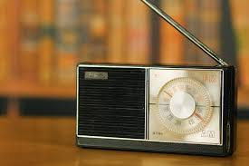
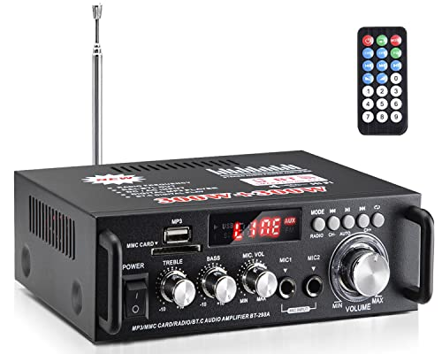

Analog Electronics
Key Features:
Deals with continuous signals like voltage and current.
Uses components such as resistors, capacitors, and transistors.
Common in audio, radio, and sensor applications.
Real-life Examples:
 
← Back to Home
Analog Electronics
Digital Electronics
Power Electronics